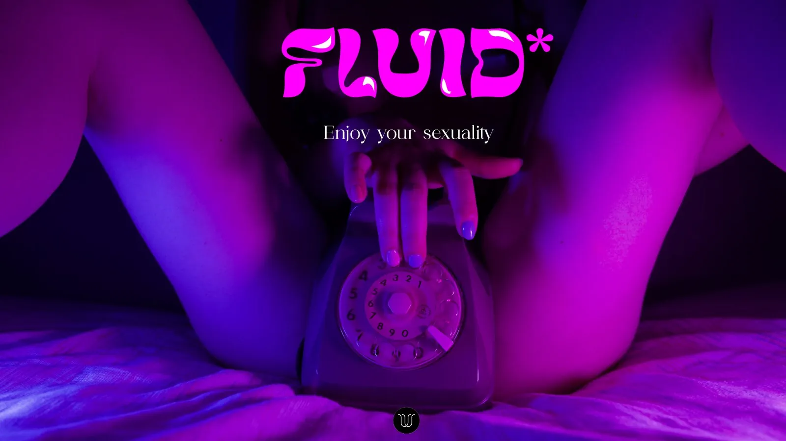

Scopri il progetto →Tesi di laurea con WOVO
FLUID*
Un festival edutainment sulla sessualità senza tabù, al Superstudio Più di Milano. Ho progettato tutto: nome, logo, spazi, programma, gadget, social, sito e una campagna unconventional.
Campagna social: un post per ogni tema dei talk.